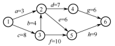
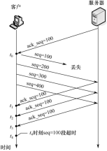
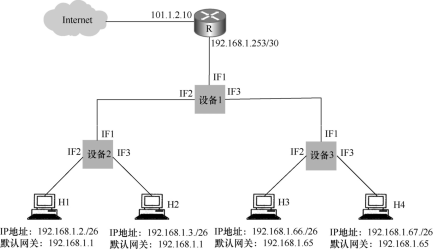

2019 年全国硕士研究生入学统一考试计算机科学与技术学科联考计算机学科专业基础综合试题
一、单项选择题（1～40 小题，每小题2 分，共80 分。下列每小题给出的四个选项中，只有一项符合题目要求）
1. 设n 是描述问题规模的非负整数，下列程序段的时间复杂度是________。
x=0;
while (n>=(x+1)*(x+1))
x=x+1;\displaystyle O(\log n)\displaystyle O(n^{1/2})\displaystyle O(n)\displaystyle O(n^2)2. 若将一棵树T 转化为对应的二叉树BT，则下列对BT 的遍历中，其遍历序列与T 的后根遍历序列相同的是________。
3. 对n 个互不相同的符号进行哈夫曼编码。若生成的哈夫曼树共有115 个结点，则n 的值是________。
4. 在任意一棵非空平衡二叉树（AVL 树）\displaystyle T_1中，删除某结点v 之后形成平衡二叉树\displaystyle T_2，再将v 插入\displaystyle T_2形成平衡二叉树\displaystyle T_3。下列关于\displaystyle T_1与\displaystyle T_3的叙述中，正确的是________。 I. 若v 是\displaystyle T_1的叶结点，则\displaystyle T_1与\displaystyle T_3可能不相同 II. 若v 不是\displaystyle T_1的叶结点，则\displaystyle T_1与\displaystyle T_3一定不相同 III. 若v 不是\displaystyle T_1的叶结点，则\displaystyle T_1与\displaystyle T_3一定相同
5. 下图所示的AOE 网表示一项包含8 个活动的工程。活动d 的最早开始时间和最迟开始时间分别是________。

6. 用有向无环图描述表达式\displaystyle (x+y)((x+y)/x)，需要的顶点个数至少是________。
7. 选择一个排序算法时，除算法的时空效率，下列因素中，还需要考虑的是________。 I. 数据的规模 II. 数据的存储方式 III. 算法的稳定性 IV. 数据的初始状态
8. 现有长度为11 且初始为空的散列表HT，散列函数是\displaystyle H(\mathrm{key})=\mathrm{key}\bmod 7，采用线性探查（线性探测再散列）法解决冲突。将关键字序列87, 40, 30, 6, 11, 22, 98, 20 依次插入HT 后，HT 查找失败的平均查找长度是________。
9. 设主串T = "abaabaabcabaabc"，模式串S = "abaabc"，采用KMP 算法进行模式匹配，到匹配成功时为止，在匹配过程中进行的单个字符间的比较次数是________。
10.排序过程中，对尚未确定最终位置的所有元素进行一遍处理称为一“趟”。下列序列中，不可能是快速排序第二趟结果的是________。
11.设外存上有120 个初始归并段，进行12 路归并时，为实现最佳归并，需要补充的虚段个数是________。
12.下列关于冯·诺依曼结构计算机基本思想的叙述中，错误的是________。
13.考虑以下C 语言代码：
unsigned short usi = 65535;
short si = usi;执行上述程序段后，si 的值是________。
14.下列关于缺页处理的叙述中，错误的是________。
15.某计算机采用大端方式，按字节编址。某指令中操作数的机器数为1234 FF00H，该操作数采用基址寻址方式，形式地址（用补码表示）为FF12H，基址寄存器的内容为F000 0000H，则该操作数的LSB（最低有效字节）所在的地址是________。
16.下列有关处理器时钟脉冲信号的叙述中，错误的是________。
17.某指令功能为\displaystyle R[r_2]\leftarrow R[r_1]+M[R[r_0]]，其两个源操作数分别采用寄存器、寄存器间接寻址方式。对于下列给定部件，该指令在取数及执行过程中需要用到的是________。 I. 通用寄存器组（GPRs） II. 算术逻辑单元（ALU） III. 存储器（Memory） IV. 指令译码器（ID）
18.在采用“取指、译码/取数、执行、访存、写回”5 段流水线的处理器中，执行如下指令序列，其中s0、s1、s2、s3 和t2 表示寄存器编号。
I1: add s2, s1, s0 // R[s2]←R[s1]+R[s0]
I2: load s3, 0(t2) // R[s3]←M[R[t2]+0]
I3: add s2, s2, s3 // R[s2]←R[s2]+R[s3]
I4: store s2, 0(t2) // M[R[t2]+0]←R[s3]下列指令中，不存在数据冒险的是________。
19.假定一台计算机采用3 通道存储器总线，配套的内存条型号为DDR3-1333，即内存条所接插的存储器总线的工作频率为1333MHz，总线宽度为64 位，则存储器总线的总带宽大约是________。
20.下列关于磁盘存储器的叙述中，错误的是________。
21.某设备以中断方式与CPU 进行数据交换，CPU 主频为1GHz，设备接口中的数据缓冲寄存器为 32 位，设备的数据传输率为50kB/s。若每次中断开销（包括中断响应和中断处理）为1000 个时钟周期，则CPU 用于该设备输入/输出的时间占整个CPU 时间的百分比最多是________。
22.下列关于DMA 方式的叙述中，正确的是________。 I. DMA 传送前由设备驱动程序设置传送参数 II. 数据传送前由DMA 控制器请求总线使用权 III. 数据传送由DMA 控制器直接控制总线完成 IV. DMA 传送结束后的处理由中断服务程序完成
23.下列关于线程的描述中，错误的是________。
24.下列选项中，可能会将进程唤醒的事件是________。 I. I/O 结束 II. 某进程退出临界区 III. 当前进程的时间片用完
25.下列关于系统调用的叙述中，正确的是________。 I. 在执行系统调用服务程序的过程中，CPU 处于内核态 II. 操作系统通过提供系统调用避免用户程序直接访问外设 III. 不同的操作系统为应用程序提供了统一的系统调用接口 IV. 系统调用是操作系统内核为应用程序提供服务的接口
26.下列选项中，可用于文件系统管理空闲磁盘块的数据结构是________。 I. 位图 II. 索引结点 III. 空闲磁盘块链 IV. 文件分配表（FAT）
27.系统采用二级反馈队列调度算法进行进程调度。就绪队列Q1采用时间片轮转调度算法，时间片为10ms；就绪队列Q2采用短进程优先调度算法；系统优先调度Q1队列中的进程，当Q1为空时系统才会调度Q2中的进程；新创建的进程首先进入Q1；Q1中的进程执行一个时间片后，若未结束，则转入Q2。若当前Q1、Q2为空，系统依次创建进程P1、P2后即开始进程调度，P1、P2需要的CPU 时间分别为30ms 和20ms，则进程P1、P2在系统中的平均等待时间为________。
28.在分段存储管理系统中，用共享段表描述所有被共享的段。若进程P1和P2共享段S，下列叙述中，错误的是________。
29.某系统釆用LRU 页置换算法和局部置换策略，若系统为进程P 预分配了4 个页框，进程P 访问页号的序列为0, 1, 2, 7, 0, 5, 3, 5, 0, 2, 7, 6，则进程访问上述页的过程中，产生页置换的总次数是________。
30.下列关于死锁的叙述中，正确的是________。 I. 可以通过剥夺进程资源解除死锁 II. 死锁的预防方法能确保系统不发生死锁 III. 银行家算法可以判断系统是否处于死锁状态
IV. 当系统出现死锁时，必然有两个或两个以上的进程处于阻塞态
31.某计算机主存按字节编址，采用二级分页存储管理，地址结构如下所示：
| 页目录号（10位） | 页号（10位） | 页内偏移（12位） |
虚拟地址2050 1225H 对应的页目录号、页号分别是________。
32.在下列动态分区分配算法中，最容易产生内存碎片的是________。
33.OSI 参考模型的第5 层（自下而上）完成的主要功能是________。
34.100BaseT 快速以太网使用的导向传输介质是________。
35.对于滑动窗口协议，若分组序号采用3 比特编号，发送窗口大小为5，则接收窗口最大是________。
36.假设一个采用CSMA/CD 协议的10Mb/s 局域网，最小帧长是128B，则在一个冲突域内两个站点之间的单向传播延时最多是________。
\displaystyle \mu\mathrm{s}\displaystyle \mu\mathrm{s}\displaystyle \mu\mathrm{s}\displaystyle \mu\mathrm{s}37.若将101.200.16.0/20 划分为5 个子网，则可能的最小子网的可分配IP 地址数是________。
38.某客户通过一个TCP 连接向服务器发送数据的部分过程如题38 图所示。客户在\displaystyle t_0时刻第一次收到确认序列号ack_seq = 100 的段，并发送序列号seq = 100 的段，但发生丢失。若TCP 支持快速重传，则客户重新发送seq = 100 段的时刻是________。
\displaystyle t_1\displaystyle t_2\displaystyle t_3\displaystyle t_4
39.若主机甲主动发起一个与主机乙的TCP 连接，甲、乙选择的初始序列号分别为2018 和2046，则第三次握手TCP 段的确认序列号是________。
40.下列关于网络应用模型的叙述中，错误的是________。
二、综合应用题（第41～47 小题，共70 分）
41.（13 分）设线性表\displaystyle L=(a_1,a_2,a_3,\ldots,a_{n-2},a_{n-1},a_n)采用带头结点的单链表保存，链表中的结点定义如下：
typedef struct node
{
int data;
struct node* next;
} NODE;请设计一个空间复杂度为\displaystyle O(1)且时间上尽可能高效的算法，重新排列L 中的各结点，得到线性表\displaystyle L^\prime=(a_1,a_n,a_2,a_{n-1},a_3,a_{n-2},\ldots) （1）给出算法的基本设计思想。 （2）根据设计思想，采用C 或C++语言描述算法，关键之处给出注释。 （3）说明你所设计算法的时间复杂度。
42.（10 分）请设计一个队列，要求满足：①初始时队列为空；②入队时，允许增加队列占用空间；③出队后，出队元素所占用的空间可重复使用，即整个队列所占用的空间只增不减；④入队操作和出队操作的时间复杂度始终保持为\displaystyle O(1)。请回答下列问题： （1）该队列是应选择链式存储结构，还是应选择顺序存储结构？ （2）画出队列的初始状态，并给出判断队空和队满的条件。 （3）画出第一个元素入队后的队列状态。 （4）给出入队操作和出队操作的基本过程。
43.（8 分）有\displaystyle n\ (n\ge3)位哲学家围坐在一张圆桌边，每位哲学家交替地就餐和思考。在圆桌中心有\displaystyle m\ (m\ge1)个碗，每两位哲学家之间有一根筷子。每位哲学家必须取到一个碗和两侧的筷子后，才能就餐，进餐完毕，将碗和筷子放回原位，并继续思考。为使尽可能多的哲学家同时就餐，且防止出现死锁现象，请使用信号量的P、V 操作［wait()、signal()操作］描述上述过程中的互斥与同步，并说明所用信号量及初值的含义。
44.（7 分）某计算机系统中的磁盘有300 个柱面，每个柱面有10 个磁道，每个磁道有200 个扇区，扇区大小为512B。文件系统的每个簇包含2 个扇区。请回答下列问题： （1）磁盘的容量是多少？ （2）假设磁头在85 号柱面上，此时有4 个磁盘访问请求，簇号分别为100 260、60 005、101 660 和110 560。若采用最短寻道时间优先（SSTF）调度算法，则系统访问簇的先后次序是什么？ （3）第100 530 簇在磁盘上的物理地址是什么？将簇号转换成磁盘物理地址的过程是由I/O 系统的什么程序完成的？
45.（16 分）已知\displaystyle f(n)=n!=n\times(n-1)\times(n-2)\times\cdots\times2\times1，计算f(n)的C 语言函数f1 的源程序（带框部分）及其在32 位计算机M 上的部分机器级代码如下：
int f1(int n){
1 00401000 55 push ebp
...
if(n>1)
1100401018 83 7D 08 01 cmp dword ptr [ebp+8],1
120040101C 7E 17 jle f1+35h (00401035)
return n*f1(n-1);
130040101E 8B 45 08 mov eax, dword ptr[ebp+8]
1400401021 83 E8 01 sub eax, 1
1500401024 50 push eax
1600401025 E8 D6 FF FF FF call f1 (00401000)
...
1900401030 0F AF C1 imul eax, ecx
2000401033 EB 05 jmp f1+3Ah (0040103a)
else return 1;
2100401035 B8 01 00 00 00 mov eax, 1
}
...
2600401040 3B EC cmp ebp, esp
...
300040104A C3 ret其中，机器级代码行包括行号、虚拟地址、机器指令和汇编指令，计算机M 按字节编址，int 型数据占32 位。请回答下列问题： （1）计算f(10)需要调用函数f1 多少次？执行哪条指令会递归调用f1？ （2）上述代码中，哪条指令是条件转移指令？哪几条指令一定会使程序跳转执行？ （3）根据第16 行的call 指令，第17 行指令的虚拟地址应是多少？已知第16 行的call 指令采用相对寻址方式，该指令中的偏移量应是多少（给出计算过程）？已知第16 行的call 指令的后4 字节为偏移量，M 是采用大端方式还是采用小端方式？ （4）f(13) = 6227020800，但f1(13)的返回值为1932053504，为什么两者不相等？要使f1(13)能返回正确的结果，应如何修改f1 的源程序？ （5）第19 行的imul 指令（带符号整数乘）的功能是\displaystyle R[\mathrm{eax}]\leftarrow R[\mathrm{eax}]\times R[\mathrm{ecx}]，当乘法器输出的高、低32 位乘积之间满足什么条件时，溢出标志OF = 1？要使CPU 在发生溢出时转异常处理， 编译器应在imul 指令后应加一条什么指令？
46.（7 分）对于题45，若计算机M 的主存地址为32 位，釆用分页存储管理方式，页大小为4KB， 则第1 行的push 指令和第30 行的ret 指令是否在同一页中（说明理由）？若指令Cache 有64 行，采用4 路组相联映射方式，主存块大小为64B，则32 位主存地址中，哪几位表示块内地址？哪几位表示Cache 组号？哪几位表示标记（tag）信息？读取第16 行的call 指令时，只可能在指令Cache 的哪一组中命中（说明理由）？
47.（9 分）某网络拓扑如题47图所示，其中R 为路由器，主机H1～H4 的IP 地址配置以及R 的各接口IP 地址配置如图中所示。现有若干以太网交换机（无VLAN 功能）和路由器两类网络互连设备可供选择。

请回答下列问题： （1）设备1、设备2 和设备3 分别应选择什么类型的网络设备？ （2）设备1、设备2 和设备3 中，哪几个设备的接口需要配置IP 地址？为对应的接口配置正确的IP 地址。 （3）为确保主机H1～H4 能够访问Internet，R 需要提供什么服务？ （4）若主机H3 发送一个目的地址为192.168.1.127 的IP 数据报，网络中哪几个主机会接收该数据报？